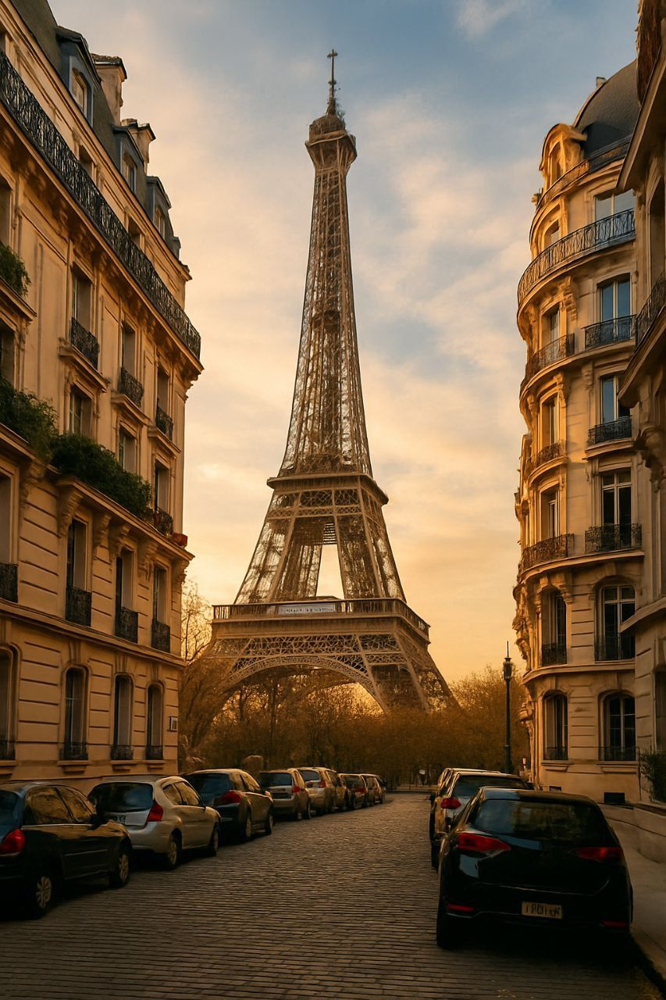

5 Outfits to Explore France in Style
Summary: Whether you’re strutting through Paris or sipping rosé in Provence, these 5 outfits will help you embody effortless French style—without trying too hard (because that’s très important).
France doesn’t do “overdressed.” It does “perfectly put together without looking like you tried.” To help you master this paradox, here are 5 outfits that speak fluent French fashion—subtle, confident, and quietly fabulous.
1. The Parisian Uniform
Black trousers, a striped Breton top, and a tailored blazer. Add leather ankle boots and a red lip. Optional: a croissant in hand and existential thoughts behind your sunglasses.
2. The Côte d’Azur Cool
White linen pants, a pale blue button-down, espadrilles, and oversized sunglasses. Finish with tousled hair and the aura of someone who owns a yacht (even if you don’t).
3. The Lyon Smart-Casual
Think neutral midi skirt, tucked-in knit top, and block heels. Add a leather satchel and delicate jewelry. You’re ready for a bistro lunch and a museum stroll.
4. The Bordeaux Boho
A flowy floral dress, suede ankle boots, and a wool hat scream effortless countryside. Add a chunky cardigan and you’re perfectly Pinterest.
5. The Alpine Chic
Monochrome leggings, a cozy oversized sweater, and a sleek puffer jacket. Add a beanie, warm boots, and hot chocolate (strictly for style points).
Style Tip: French style is more about attitude than accessories. Keep it minimal, wear clothes that fit well, and always look like you might write poetry at a café.
Final thought: In France, fashion isn’t loud—it whispers. Let your outfit say, “I woke up like this” (even if you didn’t). Now go out and strut like you belong in a Godard film.